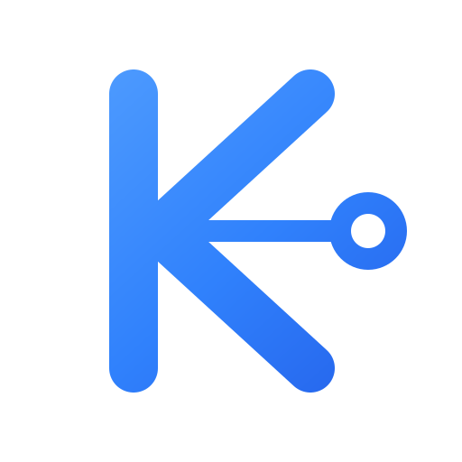

KNet Companion
Standalone connected-K identity — transparent, uncontained, and platform-mask safe.
16 px
32 px
48 px
64 px
128 px
The transparent mark is the identity. Rounded launcher shapes belong to Android or iOS packaging and must not be added to the SVG.